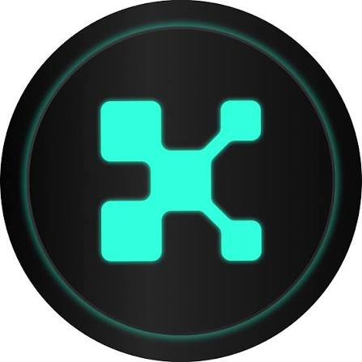

Kaito Pulse ✓ InfoFi Social Base Network
The AI-Driven Social Intelligence & Trade Verification Layer by Kaito AI
What is Kaito Pulse? (The "Fake Guru" Killer)
Kaito Pulse is an open-source Chrome browser extension developed by Kaito AI. It operates in the emerging sector of InfoFi (Information Finance) and Data Intelligence. Its primary goal is to turn the chaotic, fragmented world of crypto social media into a verified, actionable landscape.
For years, X (formerly Twitter) has been plagued by "fake gurus" posting doctored screenshots of massive trading profits. Kaito Pulse solves this by acting as a social intelligence layer overlay. It displays mathematically verified, real-time trading positions (from decentralized platforms like Polymarket and Hyperliquid) and exact wallet balances directly next to a user's post on the native X timeline.
Institutional Funding & Tier-1 Backing
Building an AI-driven data intelligence indexing platform requires massive computational resources and top-tier financial backing:
| Total Capital Raised | $10.8 Million USD secured across two massive early-stage venture rounds, bringing the company's valuation to $87.5 Million. |
|---|---|
| Seed Round ($5.3M) | Led by Dragonfly Capital in February 2023, featuring major players like Jane Street, Alphalab Capital, and Sequoia Capital China (Hongshan). |
| Series A ($5.5M) | Co-led by heavyweights Spartan Group and Superscrypt in June 2023 to expand the Kaito Research Suite and ecosystem. |
The Technology: zkTLS & Zero-Knowledge Verification
How does Kaito verify your trades without stealing your money? The answer lies in advanced cryptography rather than traditional API keys:
🛡️ Gas-Free Signatures
Using infrastructure like Privy, users can verify their on-chain wallet thresholds and balances completely gas-free, proving liquidity without risking private keys.
🔐 zkTLS (Browser Proofs)
Powered by Primus, Kaito Pulse uses Zero-Knowledge Transport Layer Security (zkTLS). This allows the extension to verify data from closed platforms (like specific account balances) and generate a cryptographic proof without ever seeing your actual login password.
📊 Live Integrations
Currently integrates seamlessly with major decentralized prediction and derivatives markets, notably overlaying verified Polymarket bets and Hyperliquid positions.
⚙️ Open-Source Transparency
The entire Kaito Pulse extension is built on Chrome Manifest V3, with its source code publicly auditable on the Kaito GitHub repository to guarantee user privacy.
Tokenomics & The $KAITO Token
The Kaito ecosystem is powered by the $KAITO token, which serves as the economic backbone for institutional data payments and governance:
🪙 Token Deployment
The token officially launched its TGE on February 20, 2025. It is deployed natively as an ERC-20 token on the highly scalable Base Network.
💰 Fixed Supply
The tokenomics structure dictates a hard-capped maximum supply of exactly 1,000,000,000 (1 Billion) tokens.
🪂 Community Allocation
A massive 33.3% (333M tokens) was dedicated to community airdrops, heavily favoring early Genesis NFT holders and legacy Yaps point contributors.
📈 Exchange Launch
Alongside its mainnet TGE, 20 Million tokens were deployed directly for early BNB Simple Earn participants (Binance HODLer allocation), and the token is actively traded on KuCoin.
Active Earning: Sunset of 'Yaps' & Rise of 'Katalyst'
Unlike traditional DePIN protocols (like Pipe Network or Grass), Kaito does not use hardware nodes or share your background bandwidth.
🚀 How Earning Works Now:
In January 2026, Kaito officially sunset its legacy "Yaps points" social leaderboard. Currently, earning revolves around the Kaito Katalyst campaign layer. Users, traders, and web3 researchers monetize their data by proving their trading track records using zkTLS. By verifying your eligibility, you can unlock specialized ecosystem rewards, trading tier allocations, and partner token airdrops (such as Sonic Labs or Axis rewards) directly through the extension.
Total Crypto Network Pro Tips: Privacy Controls
While the zkTLS technology is incredibly secure, managing your public web3 footprint is critical when verifying trading positions:
💡 Dynamic Verification Management:
You have full privacy control over the Kaito Pulse extension. You can connect, verify, or unlink specific accounts and wallets at any time. When you verify a claim (e.g., proving you hold >$10k on a chain to qualify for a Katalyst reward), you are only sharing that specific "Yes/No" proof with the network, never your transaction history or full token amounts unless you explicitly toggle those overlays to be public on your X profile.
Complete Step-by-Step Setup Guides
Watch our complete video tutorials produced by Total Crypto Network. Follow the exact operational walkthrough for securely setting up the Chrome extension and utilizing Privy wallet signatures: